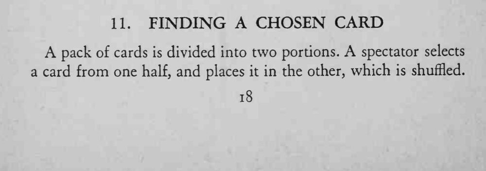
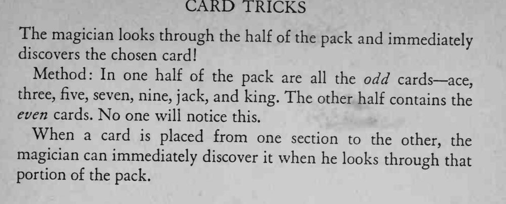

半副牌里放进了观众的选牌，魔术师只是翻看这半副牌，立刻就把选牌抽了出来。
先把奇偶两堆分开放好，别让观众看到分牌的动作。


A pack of cards is divided into two portions. A spectator selects a card from one half, and places it in the other, which is shuffled. The magician looks through the half of the pack and immediately discovers the chosen card! Method: In one half of the pack are all the odd cards— ace, three, five, seven, nine, jack, and king. The other half contains the even cards. No one will notice this. When a card is placed from one section to the other, the magician can immediately discover it when he looks through that portion of the pack.